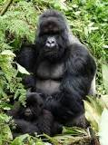

MAMIFEROS

Los gorilas de montaña son una de las subespecies de gorilas orientales que actualmente existen en el mundo. Estos gorilas pueden encontrarse tanto en África Central como
en Uganda y se trata de unos animales cuadrúpedos y terrestres, que cuentan con hábitos diurnos y que presentan un claro dimorfismo sexual y una marcada diferenciación
entre individuos.
El hábitat de los gorilas de montaña no es excesivamente amplio puesto que se trata de unos mamíferos de los que no quedan demasiados individuos u ejemplares salvajes.
Concretamente, aunque se cree que se ha incrementado su población en los últimos tiempos, no llegan a los 1000 individuos.
CARACTERISTICAS
- El gorila de montaña se distingue por su pelaje más largo, denso y oscuro, que le permite vivir en áreas donde la temperatura llega a los 0 °C.
- El del lomo es más corto que el del resto del cuerpo. Pero en su rostro, las palmas de sus manos y la planta de los pies carece de él.
- miden entre 1,5 y 1,8 metros y pueden pesar entre 204 y 227 kilogramos
- Las arrugas alrededor de la nariz también son un rasgo distintivo.
- La longitud entre la punta de un brazo y la del otro va de 2,3 a 2,6 metros, una longitud mayor a su altura.